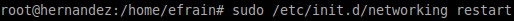

- Módulo: Administración de Sistemas Operativos
- Título del trabajo Clientes Ligeros con LTSP
- Componentes del grupo: Efraín Hernández Morales
- Curso Académico: 2014/2015
- Fecha de entrega: 25 de Septiembre de 2014
1. Servidor LTSP
1.1 Preparar la MV Server
La MV del servidor necesitará dos interfaces de red:
- Una externa
- para comunicarse con Internet.
- Configurarla en VBox como adaptador puente.
- IP estática 172.16.108.12

- Una interna
- para conectarse con los clientes ligeros.
- La IP de esta interfaz de red debe ser estática y debe estar en la misma red que los clientes (IP 192.168.0.1).
- Configurarla en VBox como "red interna".
Aquí muestro las ip configurada para la externa y la interna:
Levantamos las nuevas ip.

1.2 Instalación del SO
- Instalo un Lubuntu en la MV que actuará como servidor.
- Nombre de usuario: efrain. Contraseña: mi dni.
- Como nombre de equipo es mi primer apellido: hernandez.
- Como nombre de dominio es mi segundo apellido: morales.
- Crear 3 usuarios locales llamados:
- hernandez-alumno1,
- hernandez-alumno2,
- hernandez-alumno3.
1.3 Instalar el servicio LTSP
- Instale el servidor de clientes ligeros, según la documentación para el SO elegido mediante los siguientes comandos:
- apt-get install ltsp-server-standalone
- ltsp-build-client
- Revisar la configuración de la tarjeta de red interna del servidor. IP estática compatible con la configuración dhcp (/etc/ltsp/dhcpd.conf)

2. Preparar MV Cliente
Creo la MV cliente:
- Sin disco duro y sin unidad de DVD.
- Sólo tiene RAM y floppy (disquete).
- Tarjeta de red PXE en modo "red interna".
Con el servidor encendido, inicio la MV cliente:
- Compruebo que todo funciona correctamente.
- Cuando el cliente se conecta, entro con el usuario hernandez-alumno1
- Voy al servidor, ejecuto el comando "arp" como superusuario y capturo la salida para comprobar la conexión con el cliente.